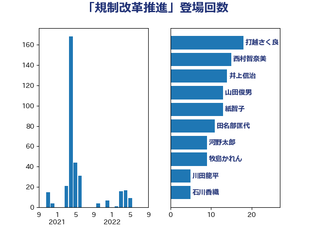

単語「規制改革推進」

| 打越さく良 | 立憲民主党 | 18 回 |
| 西村智奈美 | 立憲民主党 | 15 回 |
| 井上信治 | 自由民主党 | 14 回 |
| 山田俊男 | 自由民主党 | 13 回 |
| 紙智子 | 日本共産党 | 13 回 |
| 田名部匡代 | 立憲民主党 | 11 回 |
| 河野太郎 | 自由民主党 | 9 回 |
| 牧島かれん | 自由民主党 | 9 回 |
| 川田龍平 | 立憲民主党 | 5 回 |
| 石川香織 | 立憲民主党 | 5 回 |
| 福島みずほ | 社会民主党 | 5 回 |
| 田村貴昭 | 日本共産党 | 4 回 |
| 舟山康江 | 国民民主党 | 4 回 |
| 野上浩太郎 | 自由民主党 | 4 回 |
| 倉林明子 | 日本共産党 | 3 回 |
| 小山展弘 | 立憲民主党 | 3 回 |
| 徳永エリ | 立憲民主党 | 3 回 |
| 柳ヶ瀬裕文 | 日本維新の会 | 3 回 |
| 篠原孝 | 立憲民主党 | 3 回 |
| 和田政宗 | 自由民主党 | 2 回 |
| 平井卓也 | 自由民主党 | 2 回 |
| 森屋隆 | 立憲民主党 | 2 回 |
| 浅田均 | 日本維新の会 | 2 回 |
| 田村憲久 | 自由民主党 | 2 回 |
| 石橋通宏 | 立憲民主党 | 2 回 |
| 礒崎哲史 | 国民民主党 | 2 回 |
| 稲津久 | 公明党 | 2 回 |
| 若宮健嗣 | 自由民主党 | 2 回 |
| 藤木眞也 | 自由民主党 | 2 回 |
| 上野通子 | 自由民主党 | 1 回 |
| 中谷一馬 | 立憲民主党 | 1 回 |
| 伊藤孝恵 | 国民民主党 | 1 回 |
| 佐々木さやか | 公明党 | 1 回 |
| 古賀友一郎 | 自由民主党 | 1 回 |
| 坂本哲志 | 自由民主党 | 1 回 |
| 大串博志 | 立憲民主党 | 1 回 |
| 岩本剛人 | 自由民主党 | 1 回 |
| 岸田文雄 | 自由民主党 | 1 回 |
| 岸真紀子 | 立憲民主党 | 1 回 |
| 後藤茂之 | 自由民主党 | 1 回 |
| 徳永久志 | 立憲民主党 | 1 回 |
| 枝野幸男 | 立憲民主党 | 1 回 |
| 柚木道義 | 立憲民主党 | 1 回 |
| 柴田巧 | 日本維新の会 | 1 回 |
| 梶山弘志 | 自由民主党 | 1 回 |
| 浅野哲 | 国民民主党 | 1 回 |
| 玉木雄一郎 | 国民民主党 | 1 回 |
| 石垣のりこ | 立憲民主党 | 1 回 |
| 笠井亮 | 日本共産党 | 1 回 |
| 西岡秀子 | 国民民主党 | 1 回 |
| 馬場伸幸 | 日本維新の会 | 1 回 |